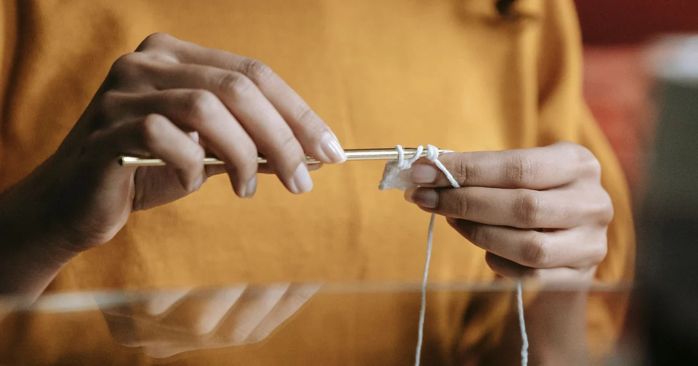
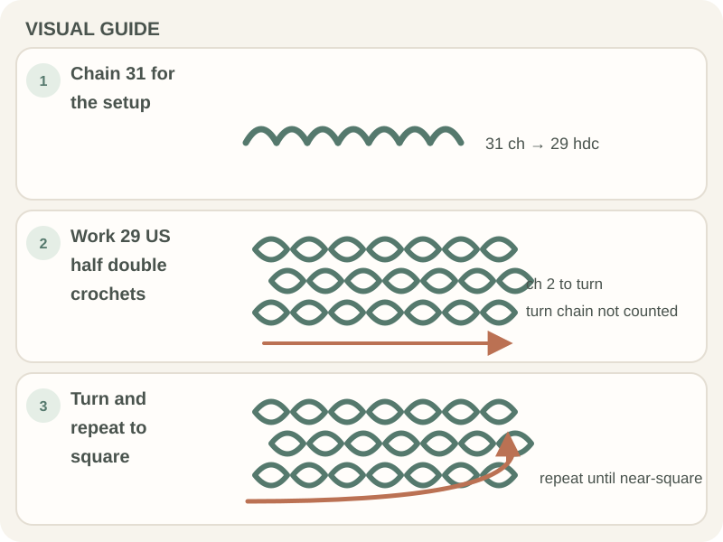

Beginner Projects · Beginner guide
How to Crochet a Basic Washcloth
Work a US half-double-crochet washcloth sample with consistent rows and fabric suited to your yarn.

A washcloth benefits from an easy-care fabric. This sample specifies a row count but not finished size or tested care results.
Before you begin
Choose yarn by its label and intended care. These instructions use US hdc; the turning chain is not counted as a stitch in this sample.
Step-by-step instructions
- Chain 31. Work a US hdc into the third chain from the hook and each remaining chain: 29 stitches.
- Chain 2 and turn. Work one hdc in each stitch, keeping 29 across.
- Repeat until the fabric is close to square, measuring it relaxed. The chain-2 turning chain is not counted here.
- Fasten off and weave in ends. Follow the yarn label’s care directions before washing or gifting.

What to check
Keep the turning chain separate
The first row has 29 stitches because two chains are skipped. If your pattern uses another turning-chain rule, its count may differ.
Frequently asked questions
Does chain 2 count as a stitch here?
No. These sample instructions say not to count it. Other patterns may use another rule.
How do I choose the size?
Measure as it grows and stop when it suits your use; no fixed row total is given.
Follow the washcloth stitch sequence
For basic washcloth, use this as the starting rule: work the pattern’s stitch repeat and keep edges consistent so the cloth stays close to its intended shape. The stitch repeat, gauge, and sizing notes affect the finished shape and amount of work. Read the relevant instructions before beginning and keep them nearby as you work. If a general tutorial and the pattern give different directions, follow the pattern’s stated convention; another project may use a different method.
Check the chain and first row count
Before proceeding, confirm the pattern’s yarn and care directions. Write any project-specific choice in your notes so you can apply it consistently. If the pattern or label leaves the detail unclear, look for its own key or maker guidance rather than assuming that another project follows the same convention. This short check can prevent a small misunderstanding from affecting the rest of the work.
Keep turning chains consistent
A practical way to apply basic washcloth: Read the pattern’s materials, repeat, size, and finishing notes, then count a few rows and inspect the fabric before continuing. If the stitch or fit is unfamiliar, make a small sample and compare its texture and shape with the pattern’s description before committing to many rows or rounds. Keep the sizing and care information with the project as it grows.
Compare fabric with the pattern size
A common mistake in basic washcloth is assuming a different yarn or stitch will preserve the same size. Watch for this sign: the cloth curls, changes dimensions, or has uneven sides. That can change the size, shape, or fit from what the pattern describes. Compare the recent work with the pattern and locate the first point where they differ. Correct that detail before continuing; stretching the fabric or adding an unplanned step can hide the cause without fixing it.
Follow the yarn’s care directions
If the cloth curls, changes dimensions, or has uneven sides, first check the pattern’s yarn and care directions. Then compare the stitch count, repeat, sizing note, and construction method with what you actually have. Change one thing at a time so you can tell whether it addresses the problem. If the instructions and materials match but the result still differs, use the project’s gauge, sizing, substitution, or care notes as relevant; those are more useful than a universal fix.
Avoid assuming a universal washcloth size
Remember: check the label and pattern before finishing and laundering. A sample reveals how the chosen yarn and stitch behave before you repeat them across a larger piece. If you choose an alternative, record it and compare a small sample or written step before applying the change across the project.
Finish the sample and inspect the edges
To make basic washcloth easier to repeat, use this sequence: count a few rows and inspect the fabric before continuing, inspect the result, and only then continue. At first, slow down at the point where the pattern changes direction, begins a new round, or starts a repeat. A removable marker or brief row note can hold your place while you learn the construction. Once the sequence is clear, you can work more steadily without guessing which loop or instruction comes next.
Conclusion: Basic washcloth
Keep this lesson in mind: check the label and pattern before finishing and laundering. Use the pattern’s gauge, repeat, and sizing notes as you continue. The sample instructions do not establish one standard washcloth size. Compare the fabric with the dimensions and care guidance in the pattern and yarn label.